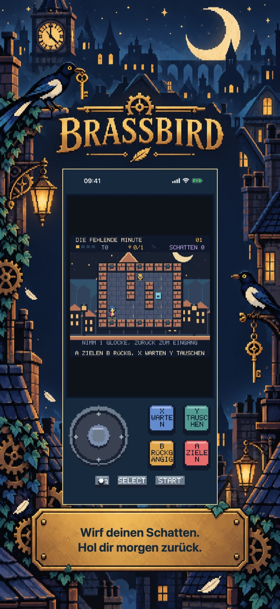
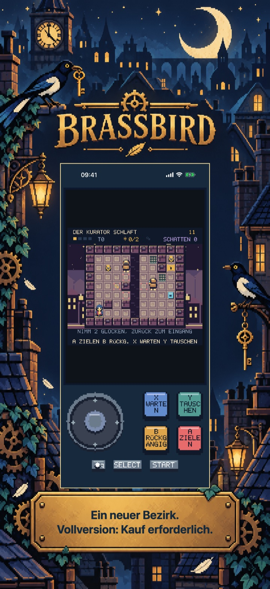
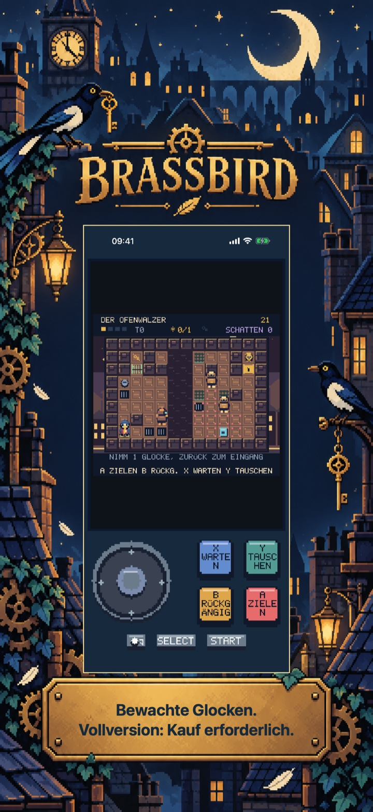
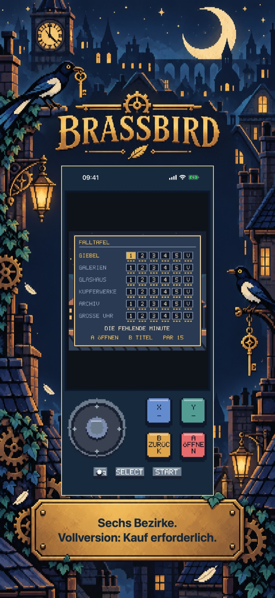

Brassbird: Schattenraub-Rätsel
Brassbird: Schattenraub-Rätsel
Pip holt morgen mit einem Schatten für drei Takte zurück. Plane 30 Coups und sechs Meistergewölbe in sechs Bezirken. Fünf Coups gratis, danach ein Einmalkauf.
Demnächst im App Store
Der erste Bezirk: fünf vollständige Story-Heists.

Pixelabenteuer
Eine eigene Reise für dieses Spiel
Sechs Bezirke bieten 30 Story-Coups und sechs optionale Meistergewölbe. Sammle bis zu 108 dauerhafte Bänder für Flucht, Dossier und optimalen Par. Gestaltete Räume, Geschichte, eigene Musik und lokale Spielstände begleiten jeden neuen Versuch.
Beginne mit dem kostenlosen Einstieg
Der erste Bezirk: fünf vollständige Story-Heists.
Schalte fünf weitere Bezirke, 25 Story-Heists, alle sechs Meistergewölbe, die vollständige Geschichte samt Ende und alle Band-Herausforderungen frei.
Einmalkauf · Keine Werbung · Kein Abo
Brassbird: Schattenraub-Rätsel
Wirf, lenke ab und tausche
Wirf deinen Schatten, überliste die Wachen und entkomme mit den gestohlenen Glocken.
Pip ist eine Elster und Schlossknackerin in einem rundenbasierten Pixelabenteuer. Der Schatten hält drei Takte: lenke Patrouillen ab, halte Platten oder tausche über Lücken hinweg die Position. Zielen und die Vorschau des nächsten Takts zeigen Folgen vor dem Zug. Rückgängig und schrittweise Hinweise helfen beim Experimentieren.
Sechs Bezirke bieten 30 Story-Coups und sechs optionale Meistergewölbe. Sammle bis zu 108 dauerhafte Bänder für Flucht, Dossier und optimalen Par. Gestaltete Räume, Geschichte, eigene Musik und lokale Spielstände begleiten jeden neuen Versuch.
Der erste Bezirk: fünf vollständige Story-Heists.
Schalte fünf weitere Bezirke, 25 Story-Heists, alle sechs Meistergewölbe, die vollständige Geschichte samt Ende und alle Band-Herausforderungen frei.
Keine Werbung, Konten, Analyse oder Abonnements. Ein nicht verbrauchbarer Kauf schaltet das ganze Spiel dauerhaft frei. Apple StoreKit verarbeitet Kauf und Wiederherstellung; der Preis erscheint vor der Bestätigung. Englisch, Spanisch, Französisch, Deutsch und Italienisch sind enthalten. Alle Spielinhalte liegen lokal vor.
Im Spiel
Im Spiel
Sechs native Ansichten zeigen die Spielidee, zwei weitere Welten, tieferes Spiel, Reisebelohnungen und das Titelmenü oder den Atlas.
Hol dir morgen zurück.

Vollversion: Kauf erforderlich.

Vollversion: Kauf erforderlich.
Vollversion: Kauf erforderlich.
Bewahre deine Bänder.

Vollversion: Kauf erforderlich.
Spielvideo auf Englisch
Ein 24-sekündiges Spielvideo auf Englisch. Zusätzliche Inhalte erfordern einen einmaligen Vollspielkauf.
Hilfe & Support
Fragen zu Brassbird: Schattenraub-Rätsel?
Hier findest du praktische Antworten zu Steuerung, Spielstand, kostenlosem Einstieg und dem Kauf der Vollversion.
Wie spiele ich?
Wo wird mein Fortschritt gespeichert?
Was kann ich kostenlos spielen?
Was schaltet der Vollversionskauf frei?
Einmalkauf · Keine Werbung · Kein Abo
Wie stelle ich einen Kauf wieder her?
Mein Kauf ist ausstehend oder der Store nicht verfügbar. Was kann ich tun?
Support kontaktieren
Stelle eine Frage oder melde ein Problem. Nenne das Spiel, dein Gerät und was passiert ist.
Kontaktiere uns auf GitHubMeldungen sind öffentlich und erfordern ein GitHub-Konto.